WordPress es un sistema de gestión de contenidos lanzado el 27 de mayo de 2003, enfocado a la creación de cualquier tipo de página web. Originalmente alcanzó una gran popularidad en la creación de blogs, para luego convertirse, en una de las principales herramientas para la creación de páginas web comerciales.2
Wordpress está desarrollado en el lenguaje PHP para entornos que ejecuten MySQL y Apache, bajo licencia GPL y es software libre. Sus fundadores son Matt Mullenweg y Mike Little. WordPress fue creado a partir del desaparecido b2/cafelog y se ha convertido en el CMS más popular de la blogosfera y en el más popular con respecto a cualquier otro CMS de uso general
Las causas de su enorme crecimiento son, entre otras, su licencia GPLv2, su facilidad de uso y sus características como gestor de contenidos.
Aunque la mayor parte de la documentación existente se basa en la utilización del motor de bases de datos MySQL sobre el servidor web Apache, este sistema de gestión de contenidos puede también instalarse en entornos que ejecuten PostgreSQL, MariaDB y Nginx. Otro punto a considerar sobre su éxito y extensión es la enorme comunidad de desarrolladores y diseñadores, encargados de programarlo en su núcleo o creando complementos (llamados plugins) y plantillas (llamadas temas) para la comunidad. En marzo de 2019 era usado por el 33,4 % de todos los sitios en Internet y un 60,3 %
de todos los sitios basados en gestores de contenido (CMS).

¿Qué es WordPress exactamente?
La definición más simple de WordPress es que se trata de una aplicación software para crear y gestionar sitios web
(crear sus contenidos, etc.).Hay muchas aplicaciones de este tipo, las cuales se conocen también como CMS
(“Content Management System”, sistema de gestión de contenidos).
WordPress tiene, además, la peculiaridad de ser un proyecto de software libre y de fuentes abiertas
que depende de la Fundación WordPress, una fundación sin ánimo de lucro, presidida por Matt Mullenweg,
el creador de WordPress.
Esto quiere decir que su código es creado y mantenido por una comunidad de miles de desarrolladores
voluntarios (lo que garantiza su continuidad) y que puedes disponer de la aplicación completamente gratis.
¿Para qué se usa WordPress y a quienes sirve?
La razón para usar este tipo de aplicaciones (CMS) es muy simple: permiten crear webs y sus contenidos
de una forma visual, sin tener que programar, de una manera parecida a cómo se trabaja en un editor de texto
moderno como Microsoft Word, por ejemplo.Esto no fue siempre así. En los comienzos de la web, las páginas web
se tenían que codificar en un lenguaje llamado HTML (una especie de lenguaje de Etiquetas),
Qué son las plantillas de WordPress?
Las plantillas (o “temas”) de WordPress son un concepto muy parecido a los plugins,
pero están pensadas específicamente para el diseño web, la apariencia de WordPress,
aunque muchas veces también incluyen cierta funcionalidad.
Las plantillas funcionan a modo de diseños “prefabricados”, con su estilo de maquetación,
sus tipos de letra, tamaños de letra, su conjunto y combinaciones de colores, etc.
Cual es la funcionalidad Wordpress, ¿Con qué fin fue creado?
Empecemos con WordPress.org: éste es el sitio del proyecto de código abierto, es decir,
la “sede” de la comunidad que desarrolla WordPress y dónde tú como usuario
también te puedes descargar la versión actual de la aplicación de WordPress
(en el botón azul arriba a la derecha):
Tecnologias que ofrece WordPress para desarrollar plataformas
Recursos de desarrollo
WordPress tiene una comunidad de desarrolladores enorme detrás y eso se hace especialmente plausible cuando uno empieza con sus propios desarrollos. En seguida te darás cuenta de que existen un montón de recursos orientados a ayudarte.
Control de calidad y tests automatizados
La calidad de tu trabajo es crucial si no quieres tirar por los suelos tu reputación. Y es que no hay nada peor que subir una nueva versión de tu plugin o tema al repositorio de WordPress y que sean tus usuarios quienes descubran que no funciona.
Sistema de control de versiones
La segunda herramienta que vas a necesitar sí o sí en tus tareas como desarrollador es un sistema de control de versiones. Los dos sistemas más conocidos para llevar el control de versiones de tu código fuente son SVN y Git. El primero lleva ya bastantes años con nosotros y, de hecho, es el que usa el directorio de plugins y temas de WordPress.org. El segundo nació en 2005 con el objetivo de convertirse en el sistema de control de versiones sobre el que desarrollar Linux, y desde entonces ha ganado muchísima popularidad. De hecho, hoy en día Github es una de las plataformas más usadas para desarrollar y compartir proyectos de software libre, Subir archivos: Se pueden subir archivos relevantes para la operación diaria para ponerlos a disposición de los empleados para su descarga y visualización.
Ver video de instalacion video de intalacion
1. Descarga WordPress desde la web oficial.
2. Sube el archivo .zip a la carpeta de tu Hosting deseada.
Extrae el contenido en la carpeta actual (Esto va a generar una carpeta
llamada wordpress dentro de la carpeta principal del Hosting public_html)
3. Crea una base de datos desde cPanel, Bases de Datos.
4. Ejecuta el instalador desde la url de tu dominio o la url temporal.
5. Completa la instalación y verifica el funcionamiento.
NOTA: Link de Descarga de WordPress-https://wordpress.org/download/
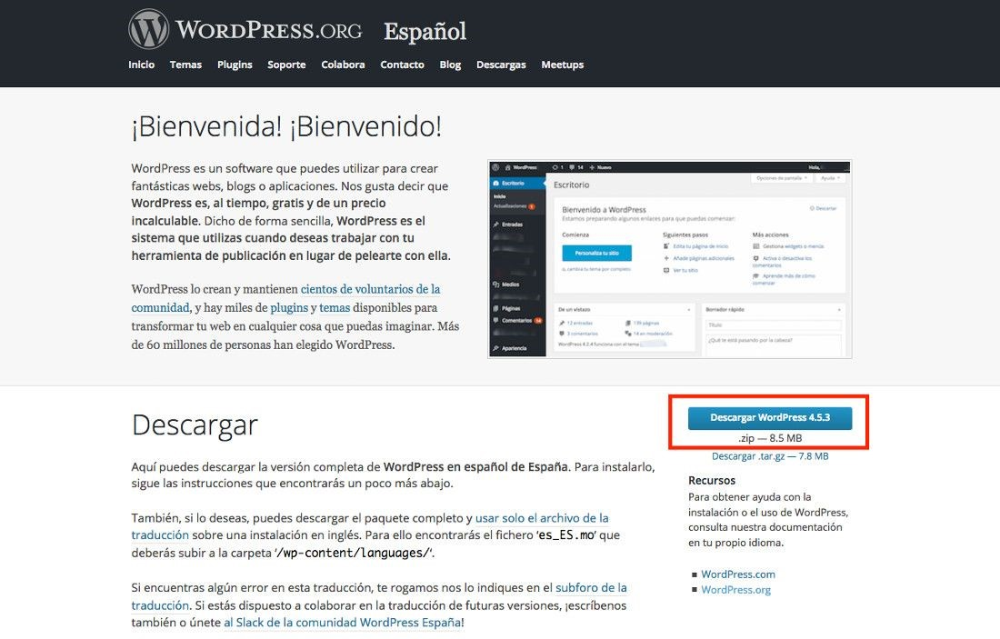
Sube el archivo .zip descargado en tu ordenador al Hosting. Si vas a utilizar WordPress
en una
carpeta diferente de la carpeta principal /public_html, lo recomendado es que subas el archivo .zip
a la carpeta principal y no a otra.
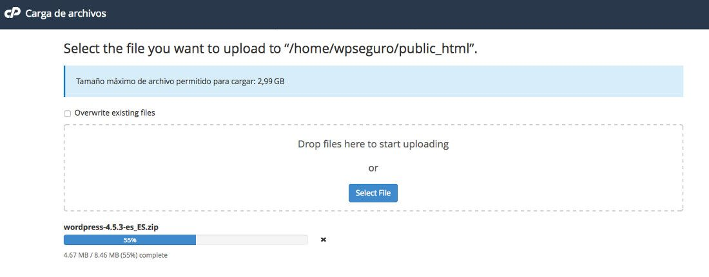
Una vez subido el archivo .zip recarga la carpeta principal /public_html para ver el archivo subido.
Lo seleccionas y haces clic en el icono superior Extraer.
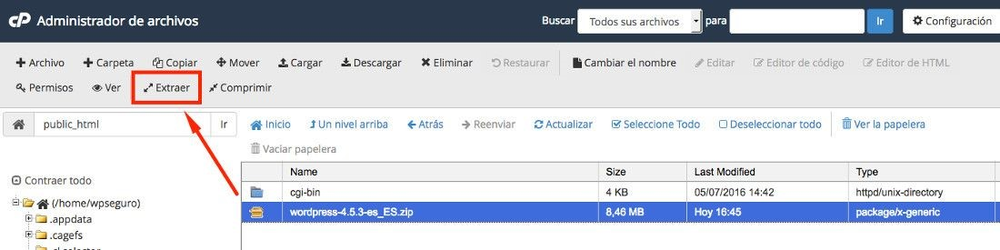
Esto va a generar otra carpeta llamada wordpress que dependerá de la principal,
quedando como /public_html/wordpress
telo en el primer campo de su página de administración de trabajos cron de CPanel,
programe el tiempo para este trabajo, que también se puede obtener
desde la página de instalación de Dolphin, como:
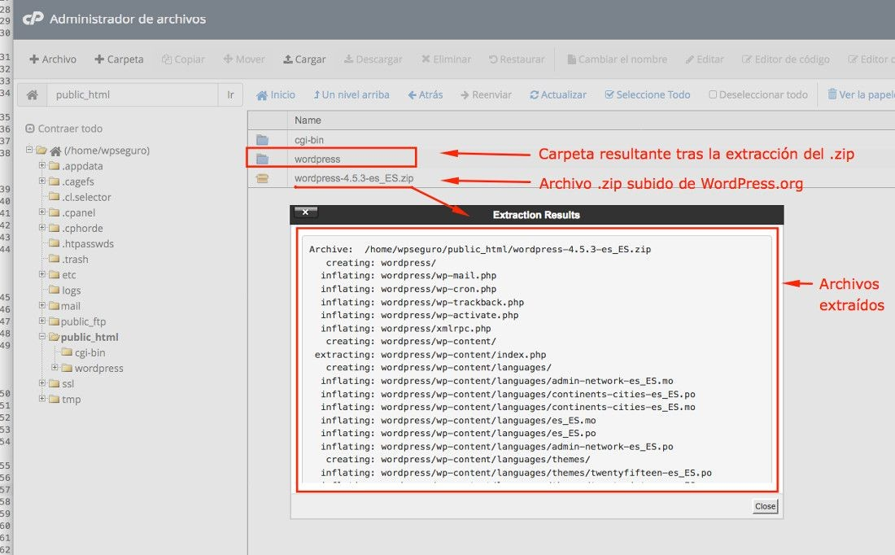
Ahora toca crear la base de datos para esta instalación de WordPress. Accede a
tu Panel de Hosting, Bases de Datos, Crear una nueva base de datos.
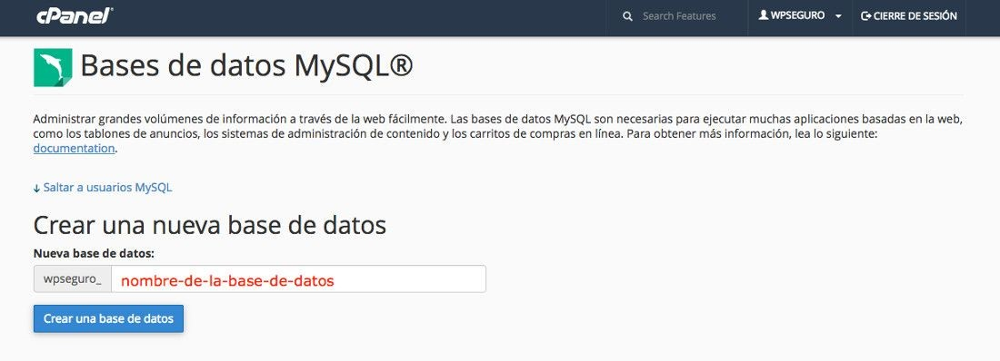
Pones un nombre que no contenga espacios, acentos o caracteres especiales y haces clic en Crear
una base de datos.
En esa misma pantalla, más abajo, debes crear el usuario
que tendrá privilegios para poder usar esa base de datos y le generas una contraseña segura,
preferible solo alfanumérica (letras y números).
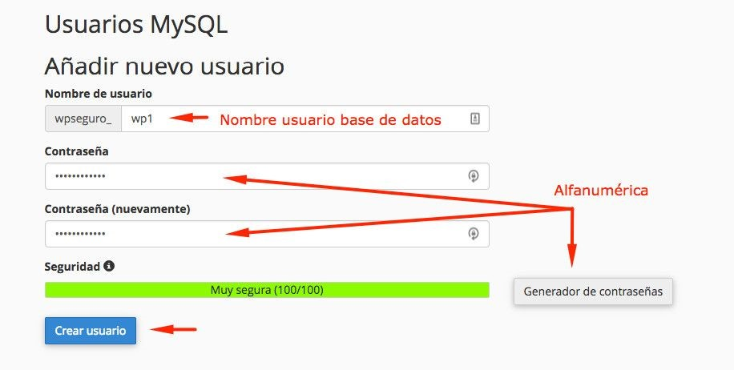
Ahora asignale los permisos pertinentes a ese usuario que has creado para que pueda ejecutar consultas,
escribir y realizar otras tareas en la base de datos.
Hazlo desde la opción Añadir usuario a la base de datos
y cierre sesión en admin.
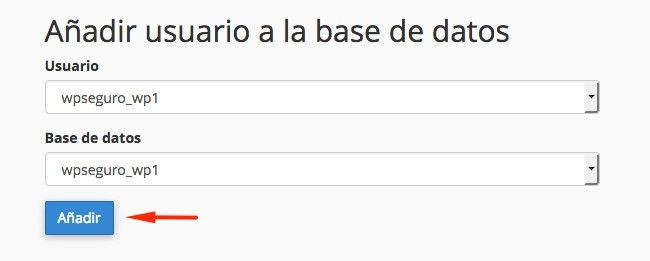
Y selecciona todos los privilegios.
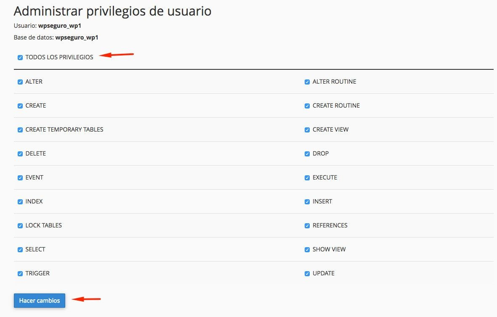
A continuación, desde una pestaña nueva de tu navegador, abre la url de tu dominio
(o la url temporal si aún no tienes dominio asignado a tu Hosting) y lanza la instalación de WordPress
(self-hosted).
Comenzando la instalaciónWordPress te indica, en el primer paso del instalador,
los datos que necesitas tener a mano para poder culminar el proceso con éxito:
1. Nombre de la base de datos
2. Usuario de la base de datos
3. Contraseña de la base de datos
4. Servidor de la base de datos
5. Prefijo de la tabla (si quieres ejecutar más de un WordPress en una sola base de datos)
Los datos relativos a la base de datos ya los habíamos colectado minutos atrás
cuando creamos una para esta instalación.El Host de la base de datos en Webempresa
es siempre localhost, en otros proveedores tendrás que consultar.
como indica el botón de esa primera pantalla.
Ahora, con los datos de la base de datos que previamente has creado,
cumplimenta los campos de la segunda pantalla de instalación de WordPress manualmente.
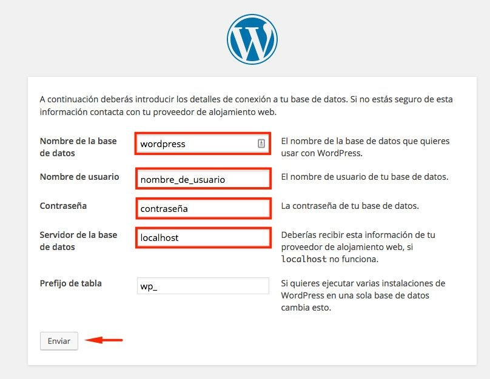
Si has puesto los datos correctos verás un aviso de que todo ha ido bien.
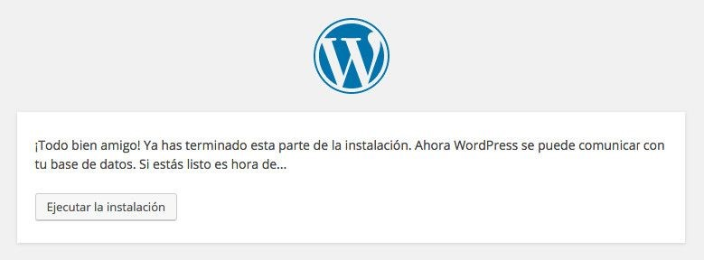
Ya puedes ejecutar la instalación de WordPress.
Ahora toca pasarle los datos del Título del sitio y datos de acceso del administrador del sitio web.
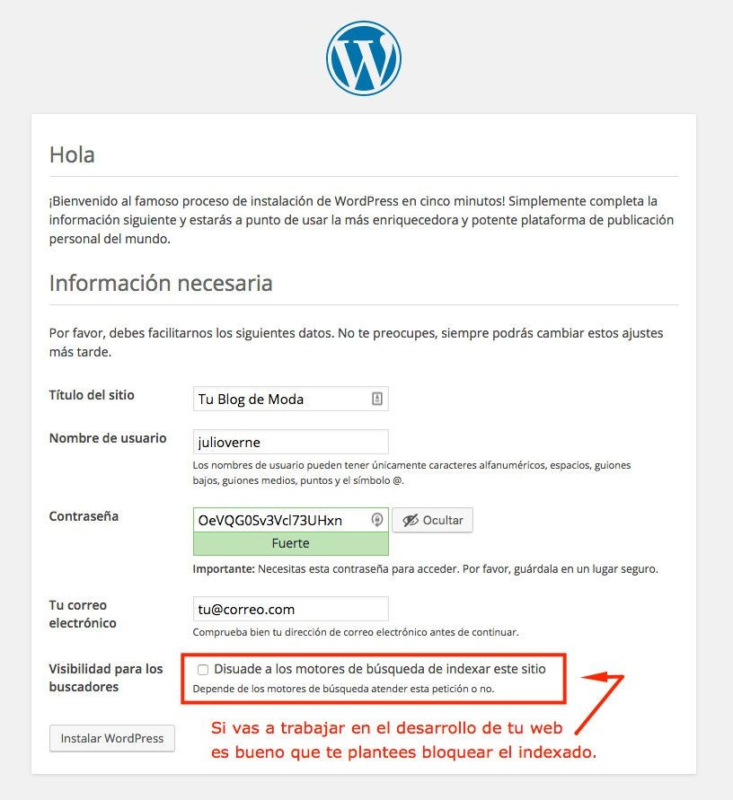
Tras pasar por esta fase de la instalación manual de WordPress,
ya estás en disposición de hacer uso de la web.
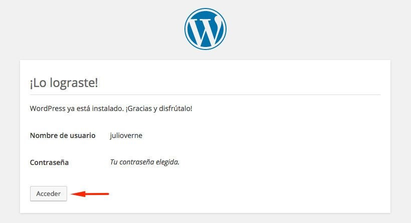
Desde la url de tu dominio.com/wordpress/wp-admin
podrás acceder al dashboard de la instalación realizada.
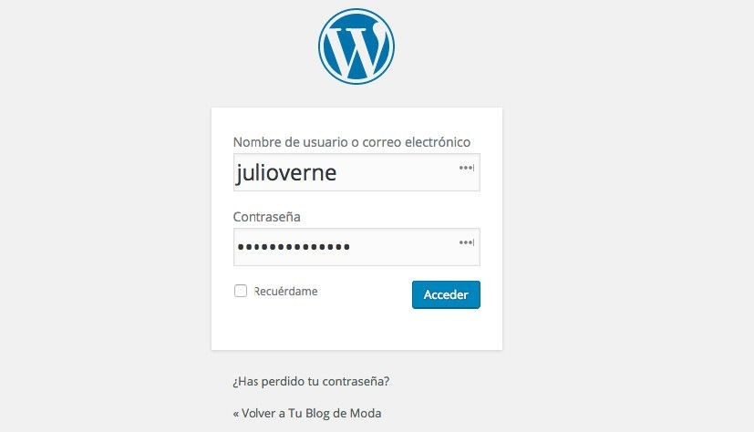
A partir de aquí, ya dentro del panel de administración de WordPress,
comienza la aventura de diseñar tu sitio web con WordPress.
Ya puedes ejecutar la instalación de WordPress.
Ahora toca pasarle los datos del Título del sitio y datos de acceso del administrador del sitio web.
Puedes ver algun ejemplo sencillo y explicacion de este CMS AQUI